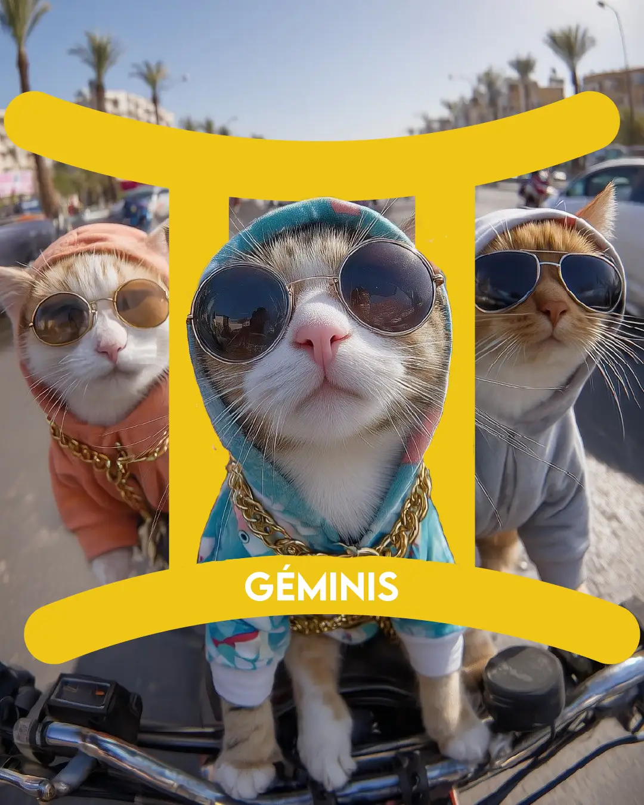

Spotify

Géminis es un signo dinámico y alegre. Acá aparecen los polos, y el movimiento entre los polos. En ese movimiento cabe el universo.
Imaginen dos gemelos flotando en el espacio. Uno está en luz, otro en sombras. Cuando se tocan, la luz pasa de uno al otro.
Géminis es el tercer signo. Después del impulso de Aries y la sustancia de Tauro, aparece algo nuevo: el pensamiento, la pregunta, la palabra. Acá empieza a operar la mente. No para quedarse con una respuesta, sino para abrirse a la siguiente pregunta.
No le interesa tanto la respuesta como la lengua rozando el paladar, la curiosidad llevándonos a navegar hacia nuevos rumbos, hacia lugares desconocidos.
La pregunta permite, abre, multiplica.
Pero es cierto: la duda puede ser un pantano.
¿Me quedo o me voy?
Pero la respuesta más geminiana no es elegir. Es reemplazar la "o" por la "y". Hago esto y aquello, me quedo y me voy, entro y salgo. Aunque parezca imposible, cualquier geminianx sabe que no lo es.
Mercurio
Mercurio, el regente de este signo, es el santo patrono de los comerciantes, pero también de los ladrones que los asaltaban en el camino.
Los dos le rezaban.
No hay maldad en hacer circular. No hay intención de dañar. Hay algo más profundo y más inocente: para Géminis, las cosas existen para circular.
La moral vendrá de otro lugar de la carta. Géminis simplemente dice: circulemos.
El juego
Las personas con mucha energía geminiana en su carta suelen parecer más jóvenes. No es solo una cuestión física. Es una actitud: curiosidad, apertura, disposición a lo nuevo.
Géminis es el niñx que juega. Que explora sin saber exactamente qué está buscando. Al que hace preguntas no para llegar a ningún lado, sino porque preguntar es divertido.
Los guaraníes tienen dos formas de nombrar "garganta". Una de ellas significa, literalmente, nido de palabras-alma.
Nombrar no es solo describir. Es construir. Es hacer existir. El mundo es como lo nombramos. Y siempre que decimos algo, también callamos algo. Siempre que nombramos, algo queda afuera. Pero en ese intento imposible puede haber mucho placer.
Oficios geminianos
El colectivero que une puntos distintos una y otra vez. El periodista que hace circular lo que sabe. El docente que traduce lo complejo para que muches lo entiendan. El comerciante que lleva lo que sobra a donde falta. El médium que le presta su voz a algo que no tiene cuerpo.
Lo que tienen en común: conectar lo diferente. No transformarlo. No fundirlo. Solo ponerlo en contacto.
Si no sabés qué tenés en Géminis...
Si no sabés qué tenés en Géminis...
Podés buscar en tu carta el símbolo de Géminis ♊ y ver qué planetas y qué casa están ahí.
Si no sabés cuál es el planeta que está en Géminis porque no conocés el símbolo, fijate acá abajo que al lado de los nombres de cada planeta está el símbolo.
Los Planetas
El Sol
El Sol
Cuando el Sol está en Géminis, la forma que encontramos para expresar y desplegar nuestra esencia está ligada a la palabra, al juego y a la mente.
Pensamos como un modo de ser, hablamos como un modo de ser, y descubrimos lo que somos en el despliegue de la palabra y en nuestra capacidad de nombrarlo.
No es solo compartir lo que somos, sino que hablar es una forma de descubrirnos. Existimos a través del encuentro con los demás, y en el encuentro con los demás reafirmamos una propia existencia individual. El vínculo es tan central como la respiración, el aire que entra y sale de nuestros pulmones nos permite abrirnos y cerrarnos a un mundo amplio, potente y maravilloso que nos aloja. En tanto aparece el otro, aparece la palabra y aparece el juego, y el universo se vuelve un espacio posible para nuestra individualidad.
Pensar es un arte que pasa por muchos lugares, que puede abrirnos mundos maravillosos y sumirnos en la incomodidad y el dolor con la misma facilidad, porque nada tiene una sola cara.
Todo es al mismo tiempo una cosa y la otra, una cosa y su opuesta. En el juego, aprendemos y nos encontramos con el mundo, pero también aparecemos, aparece nuestra esencia, aparecemos en nuestra verdad, en nuestra realidad sensible. En el juego el mundo se revela, prodigiosamente.
La Luna
La Luna
Cuando la Luna está en Géminis, nuestra seguridad emocional está ligada a entender. La comprensión nos garantiza estar a salvo, estar segurxs y al amparo de nuestro entendimiento.
La gran virtud de esta Luna es tener una enorme capacidad para nombrar lo que habita en el mundo emocional. Pero el peligro es que, muchas veces, hasta llegar a encontrar las palabras para una emoción, pasa mucho tiempo. Y como es inseguro sentir sin entender, las emociones pueden quedar bloqueadas, limitadas y restringidas.
La reacción emocional, entonces, para esta Luna consiste en encontrar nombres para todo, y el gran talento es justamente la capacidad de nombrar lo que habita en los mundos sutiles de la sensibilidad.
Estas lunas tienen una capacidad innata de entender, comprender, pensar y comunicar. La dimensión del juego puede ser profundamente virtuosa, útil y necesaria para estas personas, pero también puede volverse un lugar de estancamiento, en el que algo termine empantanándose y limitándose.
Muchas veces, los problemas con esta Luna se apilan uno sobre otro, sin fin y sin principio, y se pierde tanto la jerarquía como la capacidad de distinguir entre distintas dificultades o problemas.
El trabajo consiste en construir una posible jerarquía que ordene esos problemas, de modo que los más relevantes y centrales puedan irse resolviendo primero, y que los más pequeños e insignificantes no sumen angustia ni malestar.
Mercurio
Mercurio
Cuando Mercurio está en Géminis, habita su casa, su domicilio. La mente se vuelve poderosa y ágil, y alimenta a nuestra individualidad de formas prodigiosas, aunque a veces puede volverse excesivo.
No todo puede ser pensado, no todo puede ser entendido. Y aunque este Mercurio tenga una enorme capacidad de comprensión del mundo, a veces, sencillamente, el mundo no tiene explicación. Y puede ser desafiante convivir con eso.
Pero también Mercurio puede aportarnos la posibilidad de convivir con ese mundo mágico e inentendible. A través del juego, del arte y de la magia, podemos contactar con otro modo de existencia de la realidad que no se adivina en el pensamiento, en las ideas y en las palabras.
Así, Mercurio abre siempre otra nueva dimensión cuando está en Géminis: dos dimensiones que corren en paralelo, permitiéndose la una a la otra desplegar su propia identidad.
Un lado y el otro de las cosas se construyen entre sí mutuamente. Un extremo y el otro se producen a la vez. Con Mercurio en este signo, ese puente entre los mundos aparece flexible y vital, disponible y potente.
Venus
Venus
Venus en Géminis nos permite disfrutar de la palabra, del entendimiento y de las ideas. Disfrutar del mundo conceptual y de nuestra capacidad de hablar.
El roce de la lengua en el paladar produce placer, y ese placer se vuelve tangible y comunicable al mismo tiempo.
Con Venus en signos de aire las ideas tienen un nivel de sustancia mayor. Se puede trabajar con ellas como si fuesen una masa tangible y concreta, maleable y plástica.
Las ideas se comunican con elegancia y belleza, y es la propia elegancia y la propia belleza, en sí mismas, un valor importante para estas Venus.
En la dimensión vincular, se valora mucho la inteligencia de las personas amadas y se seduce desde la mente, la inteligencia y la fluidez de la conversación. El pensamiento erotiza y se vuelve un espacio de encuentro con el otro.
Marte
Marte
Marte en Géminis encuentra la palabra precisa para nombrar lo que es necesario nombrar y, a través de la palabra, abre posibilidades nuevas, caminos nuevos.
Es el mago del tarot, volviendo concreto y tangible el mundo a través del nombre. Es el hechicero que, al decir, construye, fabrica y vuelve posible algo que hasta ayer no lo era.
Las palabras pueden ser hirientes y cortantes, pero también precisas, como un bisturí que corta el lazo con lo falso y con lo insincero para permitirnos una frontalidad y una asertividad que clarifiquen al mismo tiempo nuestra identidad y nuestras ideas.
Somos lo que pensamos, lo que creemos y lo que somos capaces de decir. Irrumpimos a través de nuestras ideas y de nuestras palabras.
Con Marte en este signo, valoramos enormemente la independencia del pensamiento, las ideas originales y, sobre todo, propias, con las que nombrar el mundo al que hacemos aparecer en ese nombre, en esos nombres.
Yo soy, en tanto comprendo, digo, y nombro. Yo soy mi mente, y mi mente es ágil, precisa y punzante.
Júpiter
Júpiter
Júpiter en Géminis se expande desde las ideas y el pensamiento, y expande nuestra mente, convocándonos a contactar con el costado intuitivo de lxs geminianxs.
En este signo, el planeta gigante gaseoso está en caída. La dispersión lo abre y no le permite enfocar y condensar como suele hacerlo. Pero es justamente esa apertura la que se vuelve expansiva y creativa.
Es esa multiplicación de los sentidos posibles la que construye un diálogo con la verdad más dulce y armónico.
El sentido está en la mente y en la inteligencia, en la capacidad de comprender, explicar y compartir esas explicaciones con otrxs. El sentido está en enseñar a lxs demás esas verdades que la suerte ha traído hasta nuestras costas.
La vida se vuelve alegre y feliz cuando encontramos otrxs con quienes compartir nuestra sabiduría, que nos escuchan y sonríen frente a las pequeñas partes de la verdad que somos capaces de transmitir.
En este signo, la tendencia dogmática de Júpiter se ve profundamente atenuada. Y si a veces podemos enredarnos en pensamientos inconducentes que no nos llevan a ningún lugar, tenemos la garantía de no quedar atrapadxs en nuestras propias verdades.
Saturno
Saturno
Saturno en Géminis nos dice que nuestro deber es entender. Tenemos que comprender y explicarlo todo para poder sentirnos de acuerdo con las leyes y las normas.
Esto, a veces, puede acarrear cierta rigidez en los modos de pensar el mundo, un exceso de racionalismo que pretende explicar cada pedacito de la realidad con verdades que inevitablemente se van rigidizando.
Desde un lugar virtuoso, Saturno en este signo puede traernos la capacidad de jugar de un modo muy serio, muy productivo y creativo, haciendo incluso de nuestra pasión por el juego un oficio y una profesión.
Enseñar es algo que retorna permanentemente con Saturno en este signo y que abre, una y otra vez, un espacio para encontrarnos con nuestra sociedad, con nuestro mundo. Ser quien sabe y compartirle al mundo lo que sabemos es una forma de entrelazarnos con nuestra sociedad.
La tendencia es a dualizar el mundo, a encontrarnos con pares de opuestos que estructuran la realidad de una forma sólida y consistente, aunque a veces maniquea y excesivamente dualista.
Encontrar los grados, los puntos intermedios en donde las cosas adquieren matices y grises, es un ejercicio saludable que ablanda nuestro vínculo con el mundo y con la realidad.
Ablandar nuestras ideas es ablandar, al mismo tiempo, nuestra emocionalidad, nuestra estructura psíquica, nuestro mundo intangible.
Quirón
Quirón
Quirón en Géminis nos trae una profunda sensación de dolor, incomodidad y herida asociada al entendimiento, la comprensión y a la sensación permanente, constante, de que hay algo que no es escuchado, algo que no podemos decir, algo que no es alojado por lxs demás, que se nos llama a callarnos, que algo de lo que decimos no es comprendido, que lo que necesitamos decir a lxs demás no les importa.
En la búsqueda de encontrar la palabra precisa para dar cuenta de lo que habita en nuestro mundo interior, y en la imposibilidad de encontrarla, es en donde vamos a desarrollar una profunda maestría que nos permite saber mejor que nadie lo importante de las palabras, de la precisión en las palabras, de la vida que hay en cada una de ellas.
Muchas veces también esta herida quironiana aparece ligada al juego, al poco espacio para haber jugado, a una madurez temprana que exigió y tensó a la individualidad bajo el peso de la exigencia y sin un espacio cómodo y libre para desplegar con inocencia la individualidad.
Quirón en este signo también puede hablar de hermanxs ausentes o enfermxs, crueles o heridxs, que de algún modo reorganizan la narrativa de nuestra historia, de nuestra infancia, explicando por qué nos duele lo que nos duele y nos falta lo que nos falta.
El gran talento de este Quirón está en comprender que lo que se polariza, lo que se parte en dos, abre una grieta por donde es posible encontrar la libertad. En ningún extremo, sino en el centro.
Urano
Urano
Urano en Géminis trae una enorme capacidad de innovar en las ideas, en el pensamiento y en la comunicación, multiplicando las conexiones de la mente y agilizándolas enormemente.
Actualmente transita este signo, trayéndonos eso a nivel colectivo, a nivel social.
Si en tu carta Urano está en este signo, sos una persona sabia que ha sabido reacomodarse a los vaivenes de la historia.
Si estás leyendo esto porque Urano está en tu casa 3, el juego, la palabra, la comunicación y las ideas traerán siempre para vos una dimensión más grande e inentendible que te abrirá a modos nuevos de habitar el mundo, de encontrarte con la realidad.
Neptuno
Neptuno
Si estás leyendo esto es probablemente porque Neptuno está en tu casa 3.
Cuando Neptuno se emplaza en esta casa en una carta natal, hace al mismo tiempo que nuestra comunicación sea confusa, difícil de entender, vaga y, de a momentos, nebulosa. Pero también nos permite nombrar lo invisible, lo intangible, como la poesía, por ejemplo, o todo lo que comunica una imagen aun sin que seamos capaces de entender completamente qué es ese misterio con el que hemos podido contactar.
Plutón
Plutón
Si estás leyendo esto es porque Plutón está en tu casa 3.
En esta casa, muchas veces Plutón nos hace rehuir la palabra, la comunicación, el entendimiento y la inteligencia, porque nos asusta la agilidad mental. Sin embargo, somos capaces de penetrar profundamente en las ideas y en el pensamiento, entendiendo muy velozmente y con mucha profundidad cosas que no sabemos bien por qué somos capaces de entender.
La crueldad puede habernos tocado a través de la palabra, de palabras agresivas y lacerantes. Pero también debemos cuidarnos de no ejercer la crueldad por este medio.
Nuestros pensamientos tienen un componente profundamente mágico. Producimos realidad al pensarla, al nombrarla e incluso al imaginarla.
Es importante tener cuidado con lo que pensamos, limpiar nuestra mente como limpiamos nuestra casa, vaciarla de pensamientos autolesivos y lesivos, cuidar el modo en el que nos tratamos a nosotrxs mismxs.
Nodo Norte
Nodo Norte
El nodo norte en Géminis nos invita a explorar en la comunicación, el entendimiento y el juego como una forma de expandir nuestro espíritu.
Lo espiritual aparece así, asociado a lo simple, a lo llano, a lo liso, a lo que se abre suavemente desde nuestra boca hacia el mundo, a lo que busca encontrar apenas un nombre que acaricie lo que decimos al decirlo.
El corazón de ese nombre no es la comprensión, sino poder recorrer con la lengua el mundo y expandirlo, abrirlo a lxs demás.
El nodo norte en Géminis nos invita a jugar profundamente, poniendo en juego nuestra alma y la integridad de nuestra individualidad.
El nodo norte en Géminis nos invita a lo simple, a lo chiquito, a lo pequeño, a lo delicado que se esconde en cada sutil detalle de la vida.
Dios descansa en un saquito de té, en una tarde al sol, en la entrega sutil, suave y delicada a todo aquello que, aun sin comprenderlo, ensancha nuestro mundo al contactar con él.
Luna Negra
Luna Negra
La luna negra en Géminis nos trae una irrefrenable atracción y, al mismo tiempo, un intenso rechazo a todo lo que tenga que ver con nombrar, decir, hablar, poner en palabra y explicitar.
Es interesante preguntarnos si hay algún hermano o hermana que no esté y ubicar el peso que puede tener esta ausencia en nuestra vida.
La luna negra en Géminis nos invita a un contacto profundo con el silencio, desplegando todo aquello que requiere callar para poder aparecer, encontrándonos con todo aquello que solo el silencio permite aflorar.
Pero también, del mismo modo, nos invita a un profundo contacto con la palabra, con el saber, con el conocimiento, con el estudio, con la investigación y el aprendizaje.
Abrirnos a estudiar, dejar que nuestra pasión devenga en curiosidad, es sin dudas conmovedor y nos abre a encontrarnos con algo que hasta ahora desconocíamos y que puede acercarnos a reconocernos más profundamente.
Las Casas
Ascendente
Ascendente
El ascendente en Géminis nos trae un desafío en relación al movimiento, al dinamismo, a los cambios. Abrirnos y abrazar lo que se transforma, dejar que las cosas se sucedan las unas a las otras, abrazar la dimensión plástica de la realidad en la que vivimos puede ser enormemente desafiante.
El caos y la inquietud permanentemente nos asaltan y nos invitan a abrazarlos, abriéndonos a poder escuchar qué es lo propio que necesita encontrar nuevas palabras, nuevos discursos, nuevos lenguajes para expresarse y aparecer.
Constantemente la vida nos desafía a recordar y a registrar que tiene dos dimensiones, que están lo racional y lo irracional, lo tangible y lo intangible, lo propio y lo ajeno, el arriba y el abajo, lo interno y lo externo. Construir estas dualidades es tan necesario como luego será necesario irlas trascendiendo.
Muchas veces aparecen conflictos con lxs hermanxs y, de algún modo u otro, permanentemente a lo largo de la vida nuestrxs hermanxs van a traer conflictos, tensiones e incomodidades que se van a repetir en nuestra experiencia. Muchas veces incluso personas van a jugar ese rol y se recrearán conflictos como los que hemos vivido con nuestrxs hermanxs.
Es particularmente interesante prestarle atención a lxs hermanxs no nacidxs, a los embarazos gemelares y a todas las cuestiones ligadas al rubro, porque el trabajo con estas figuras generará liviandad y liberación.
Como una puerta que nos permite acceder al mundo, Géminis nos invita al juego y a la liviandad.
Casa 2
Casa 2
La casa 2 en Géminis nos invita a acumular conocimientos y a valorar lo que sabemos como un modo de producir una relación virtuosa con el mundo, de disfrutar del mundo y de disfrutar de lo que se vuelve disponible para nosotrxs en ese encuentro con el mundo.
Nuestra forma de generar recursos incluye el comercio y la agilidad mental. Poder permitirnos la velocidad intelectual, desplegar esa velocidad y encontrarnos con los frutos de esa inteligencia se vuelve dulce con la cúspide de la casa 2 en este signo.
Nuestros recursos provienen del comercio o de la mente. Podemos llegar a trabajar con hermanxs y que sea una experiencia enriquecedora.
Casa 3
Casa 3
Con la cúspide de la casa 3 en el signo de Géminis, nos encontramos con la importancia de la comunicación, la palabra y el entendimiento, y vamos a tener una gran disponibilidad comunicativa.
Quizás se vuelva demasiado directa nuestra comunicación por estar excesivamente favorecida y nos falte el matiz de la sabiduría que trae el aprendizaje de lo áspero y de lo ríspido.
La casa 3 en el signo de Géminis trae una agilidad mental que a veces puede desconectarnos de nuestros pares, pero cuando logramos esa conexión y esa sintonía, nuestra velocidad mental se vuelve un gran recurso con el que podemos establecer un contacto profundo con el mundo, nutrirnos y nutrir al mismo tiempo.
Lxs hermanxs son figuras importantes en nuestra vida, y aprender a escuchar la propia voz será un desafío enriquecedor que haremos necesariamente en vínculos con otras personas que nos ayuden a escucharnos: maestrxs, guías que nos muestren el camino que no somos capaces de ver en soledad.
Casa 4
Casa 4
La casa 4 en Géminis nos trae seguridad ligada al entendimiento. Nombro y entonces me siento a salvo, y aquello que me abre una dimensión del mundo que me resulta incomprensible desafía mi seguridad emocional.
Pero a lo largo del tiempo, y a medida que vamos creciendo y madurando, somos capaces de encontrarnos con capas de la realidad que, aunque no las comprendamos, nos resultan curiosas, enriquecedoras y valiosas.
Cuando tenemos la firmeza emocional suficiente, somos capaces de contactar con el mundo, de enredarnos con él, de entrelazarnos con la realidad de una forma profunda y potente. Así, esta casa 4 nos permitirá nombrar lo que sentimos y lo que percibimos al abrirnos al contacto profundo con el mundo.
Nuestra casa es dinámica y alegre, sabemos volverla así. El humor y la alegría son piezas tan fundamentales en la composición de un hogar como una puerta o una ventana.
Los cuentos y las canciones con las que tejemos el entramado afectivo que nos sostiene nos permiten sentirnos profundamente a salvo, aun cuando estemos lejos de casa, aun cuando estemos en soledad.
Casa 5
Casa 5
La cúspide de la casa 5 en el signo de Géminis nos hace tender a producir una dualidad muy profunda en nuestra identidad, como si la relación de mi identidad con el mundo se partiera en dos y yo fuese, al mismo tiempo, dos personas: una creativa, abierta y disponible al intercambio, y otra más reservada, que guarda para sí sus deseos, inclinaciones y necesidades.
La tendencia a partir el mundo en dos y a compartir con algunas personas, o en algunos contextos, algo, y con otras personas y en otros contextos otra cosa, es una parte inevitable del camino. Pero da paso, en un segundo momento, a síntesis muy enriquecedoras en donde muchos matices, muchos grises, son no solo posibles, sino también enriquecedores y nobles.
Nuestra obra va siempre a estar atravesada por una narrativa consistente, sólida, firme.
Y nuestrxs hijxs tenderán también a venir de a dos, a traer un mundo y el otro, una cosa y la otra, simultáneamente y jugando entre un plano y el otro.
Casa 6
Casa 6
En la casa 6, Géminis nos trae una rutina cambiante, movediza, dinámica, que abrirá incesantemente nuevos capítulos, nuevas situaciones, nuevas escenas.
El día a día se ordena alrededor de las charlas, los pensamientos, las ideas que se yuxtaponen unas con otras y se atropellan.
El orden puede aparecer, claro está, en tanto y en cuanto seamos capaces de nombrar y entender los ejes ordenadores, pero el desorden trae mucha creatividad y además una profunda alegría.
La rigidez con la que ordenamos nuestro día es también la rigidez con la que ordenamos nuestra mente.
Apoyarnos en lo que aliviana y ablanda nuestros pensamientos hace de la vida una experiencia más placentera y armónica.
Casa 7
Casa 7
En la casa 7, Géminis nos muestra que el amor tiene un nombre, muchos nombres, infinitos nombres con los que, de algún modo u otro, logro nombrarme a mí mismx.
Insinúo una palabra para describir al amor y enseguida encuentro una palabra para comprender mi interioridad.
El peligro en los vínculos para la casa 7 en Géminis es confundir al amante y al hermanx, es crear una intimidad simétrica, deserotizada, una familiaridad pareja que pierda el encanto y la potencia de lo erótico.
Sin dudas seduce el pensamiento y la inteligencia de unx y otrx, su capacidad de nombrar, de poner en palabras y de hacer circular no solo ideas, sino también el mundo a través de su lengua y de su cerebro.
El otrx con quien puedo construir un amor me trae un mundo al que puedo aprender a amar, aunque resulte en algún momento ajeno y extraño. Pero es importante reconocer qué hay de propio en ese mundo que el otrx me acerca como un puente hacia lo que todavía no soy, pero que de fondo, en lo profundo, tiene mucho que ver con lo que soy.
Casa 8
Casa 8
En la casa ocho, Géminis nos lleva a buscar incansablemente el misterio, a encontrarnos una y otra vez con lo que no ha sido dicho y con lo que está siendo callado.
La muerte reaparece como un tema que genera una profunda curiosidad y que me permite construir narrativas de vida que ordenan el mundo.
Me interesa nombrar lo oculto, lo escondido, lo profundo, y por eso me atrae el inconsciente, me atrae lo que está tapado, pero también lo que no tiene palabra, lo que no puede ser dicho, lo que no puede ser entendido.
Claro, esto también me asusta, me da miedo. Incluso puede llegar a aterrarme lo desconocido y lo que es imposible de conocer.
Pero en el fondo, siempre en el fondo, un constante llamado misterioso me convoca a nombrar el silencio, a darle voz a lxs silentes.
Casa 9
Casa 9
En la casa 9, Géminis nos trae una profunda curiosidad por todo aquello que tenga que ver con el conocimiento y con el saber.
La belleza y la verdad van de la mano, y adentrarnos en cualquiera de las dos es reconocer nuestra esencia y las formas que encuentra nuestra esencia de desplegarse y de nombrarse.
Descubro quién soy entendiendo los silencios que pesan en mi entendimiento del mundo. Hay cosas que no puedo ni podré entender, pero hay cosas que sí me he dado a comprender. Y en el encuentro con esas materias sutiles del pensamiento, algo adentro mío crece, se expande y se encuentra con lo que no conocía, pero que al contactar con eso puedo reconocerme.
Sé profundamente que hay muchas formas de la verdad. Sé profundamente que el mundo no puede ser explicado de un solo modo y de una sola vez, pero no por eso abandono el camino que encuentro. No por eso dejo de ir hacia lo profundo del pensamiento humano a descubrir las verdades que necesito para sentirme bien.
Mi filosofía de vida puede ser liviana, alegre y juguetona. No requiere profundidad, pero de algún modo, inevitablemente, la tiene.
Casa 10
Casa 10
Géminis en la casa 10 nos permite encontrar en el comercio y en la circulación de ideas lugares muy propios para desplegarnos en el ámbito profesional.
Nuestro trabajo se sirve de nuestra capacidad de hablar, de comunicar y de poner en palabras lo que sentimos y lo que somos.
El desafío de nuestra profesión es cierta exposición intelectual, mental, cierta exposición de nuestras capacidades de razonamiento. La mente procesa un sinfín de cosas y a veces creemos que la inteligencia está limitada solo a alguna de ellas. Lo cierto es que la inteligencia tiene muchos modos de existir, y descubrir cuál es nuestro tipo de inteligencia, nuestra forma de lucidez, es parte del trabajo de reconocernos, es parte del proceso de identificar la verdad que habita en nuestro corazón.
Ser profesorx, compartir mis conocimientos, es una forma muy satisfactoria de obtener recursos, como también lo son comprar y vender, y hacer movimientos que lleven a la gente de un lugar a otro.
Hacer circular esa pasión geminiana aparece con la casa 10 como un destino y una meta, como un punto de llegada y un modo de llegar.
Casa 11
Casa 11
La casa 11 en Géminis trae una intelectualidad muy veloz, muy ágil, mucha capacidad de entendimiento, sobre todo para comprender cosas nuevas y diferentes.
Hay agilidad para comprender los cambios que estamos viviendo en la comunicación, en el uso del lenguaje y en la forma en la que habitamos los medios de comunicación.
Nuestrxs amigxs pueden sentirse muy profundamente hermanxs. Y es a través de las amistades en donde llegaremos a poder reconocer el verdadero valor del vínculo con los pares: ese otrx que me trae algo que solo puede darme porque es semejante a mí, porque está en mi mismo andarivel, porque el otrx y yo valemos lo mismo.
Desde ahí, el mundo se vuelve una red con la que puedo entrar en relación.
Aprendo a entrar en relación con esta vastedad humana de la que soy parte a través de los vínculos con estxs amigxs-hermanxs.
Casa 12
Casa 12
Con la casa doce en Géminis, entender es una forma de mantenernos a salvo de sentir. Esa incomodidad profunda que nos trae la emocionalidad nos es ajena y perturbadora.
En cambio, las ideas, las palabras, las narrativas son lugares muy dulces y placenteros. Son lugares que traen una confianza y una certeza. Son lugares que abren un mundo agradable.
El peligro es quedar demasiado pegadxs a viejos discursos familiares que me señalan cosas que son falsas, que marcan en mí palabras ajenas.
Ser fiel a lo que dijeron de mí, a lo que entendieron en mí, puede tener un alto costo.
Liberarse es liberarse, sobre todo, de lo que han dicho que soy.
¿Puedo preguntarme, profunda y honestamente, quién soy en realidad?
escuchá el podcast!
YouTube
Kit astrológico para habitar la tierra
Los acontecimientos celestes pueden ser el ruido que enturbia nuestra vida o la melodía que nos permite improvisar. En este podcast semanal voy a intentar describir el cielo para invitarte a mirar de otro modo lo que te pasa.
Si todo sale bien, además del análisis de tránsitos semanales haré algún que otro contenido más imperecedero para acompañarte en los días de la vida.
"Improvisar es unirse al mundo, confundirse con él."
— Deleuze y Guattari.